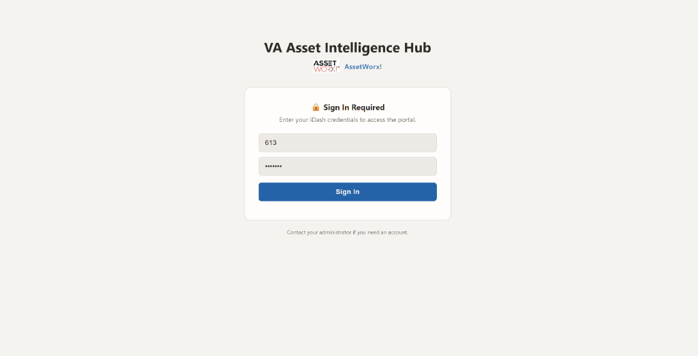
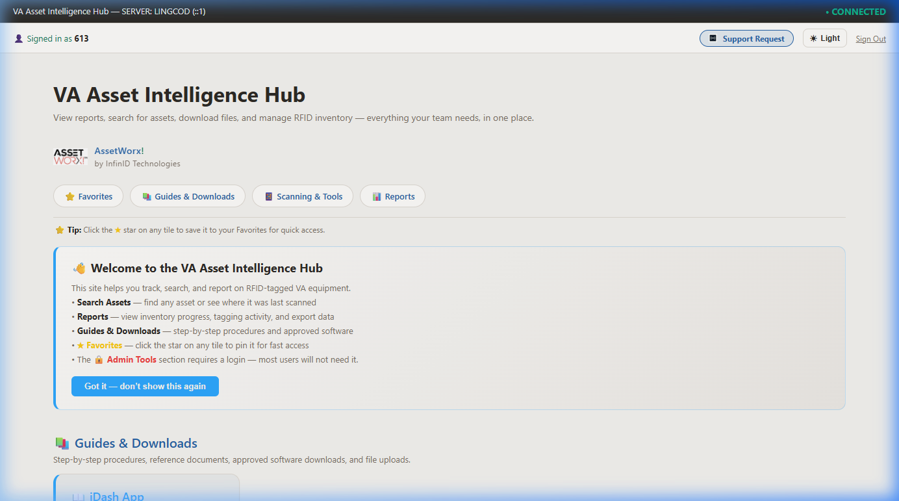
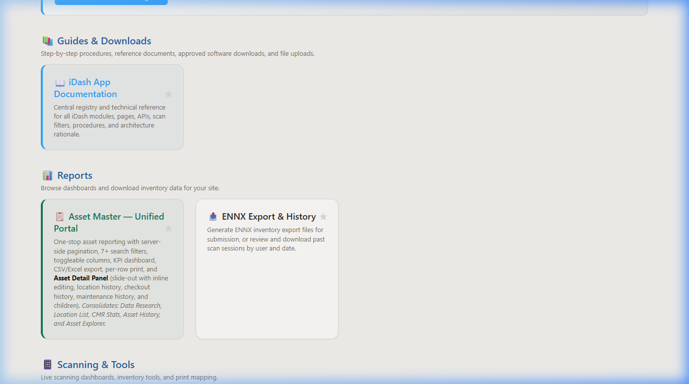
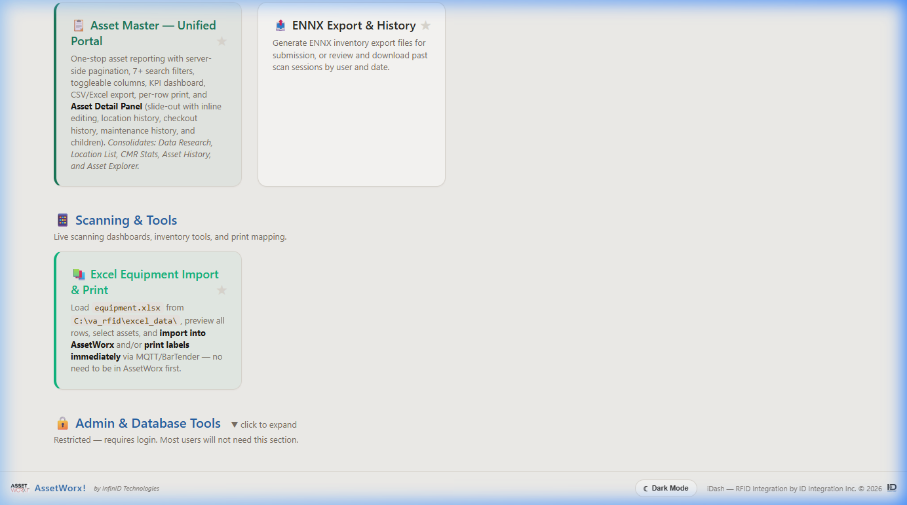

How to sign in to iDash, navigate the hub, and understand what each section contains.

The iDash sign-in page — enter your site number as the username and your assigned password, then click Sign In.
| Username | 613 — your VA site number |
| Password | 6131234 — provided by your site administrator |

The Hub home page after signing in as site 613. Note the “Signed in as 613” confirmation in the top-left header.
| Header Control | What It Does |
|---|---|
| ★ Support Request | Submit a support ticket or question directly from the hub. |
| ☀ Light / Dark | Toggles the hub between light mode and dark mode. Your preference is saved per browser. |
| Sign Out | Logs you out and returns to the sign-in page. Always sign out on shared computers. |
| Tab | What It Shows |
|---|---|
| ⭐ Favorites | Tiles you have starred for quick access. Star any tile to add it here. |
| 📚 Guides & Downloads | Step-by-step user guides, reference documents, approved software downloads, and file uploads. |
| 📱 Scanning & Tools | Live scanning dashboards, inventory tools, and print mapping utilities. |
| 📊 Reports | Asset reports, ENNX export, and inventory data dashboards. |

The main tile sections — Guides & Downloads, Reports, and Scanning & Tools.

Additional tiles further down the hub.
| Section | Tile | What It Does |
|---|---|---|
| Guides & Downloads | 📚 iDash App Documentation | Central registry and technical reference for all iDash modules, scan filters, procedures, and user guides. This is where you are now. |
| Reports | 📋 Asset Master — Unified Portal | One-stop asset reporting: search with 7+ filters, view KPI dashboard, export CSV/Excel, and open the Asset Detail Panel for location history, checkout history, and maintenance records. |
| 📤 ENNX Export & History | Generate ENNX inventory export files for AEMS/MERS submission. Review past scan sessions by user and date. Export or email results. See the ENNX Guide for full details. | |
| Scanning & Tools | 📚 Excel Equipment Import & Print | Load an equipment.xlsx file, preview rows, select assets, and import or print labels via MQTT/BarTender integration. |
/iDash/documentation/index.aspx) for quick future access — the hub will remember your session and skip the login screen until it expires.
| Issue | Solution |
|---|---|
| Login button does nothing or page reloads blank | Verify your username (site number only, no spaces) and password are correct. Try a different browser. |
| “Invalid username or password” error | Check for extra spaces before or after your username. Passwords are case-sensitive. Contact your site administrator if correct credentials still fail. |
| Page times out or shows a server error | Verify you are connected to the VA network or MiFi. The iDash server must be reachable from your workstation. |
| Hub shows no tiles after login | Try refreshing the page (F5). If tiles remain missing, your account may not have the correct site assignment — contact your administrator. |
| Session expired / redirected back to login | Sessions expire after a period of inactivity. Simply log in again — your work is not lost. |